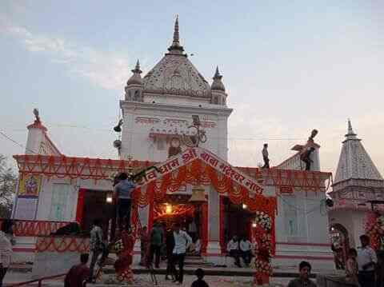

मंदिर का इतिहास
बाबा भदेश्वर नाथ मंदिर बस्ती जिला मुख्यालय से लगभग 5–6 किमी दूर, कुवानो (कुवानों) नदी के तट पर है। जिला प्रशासन के पर्यटन पृष्ठ के अनुसार इस शिवलिंग और भदेश्वर नाथ का नाम शिव महापुराण में भी उल्लिखित है।
- रावण से जुड़ी मान्यताजिला पर्यटन पृष्ठ के अनुसार लोकमान्यता है कि मंदिर की स्थापना रावण ने की थी।
- पांडवों की स्मृतिकुछ स्थानीय कथाएँ इस स्थल को पांडवों के अज्ञातवास और युधिष्ठिर की शिव-पूजा से जोड़ती हैं।
- महाशिवरात्रि का मेलाहर साल शिवरात्रि पर यहाँ मेला लगता है; सावन और सोमवार को भी भक्त बड़ी संख्या में आते हैं।
- झारकेश्वर बाबा की मान्यतालोकमान्यता: शिवलिंग को 'झारकेश्वर बाबा' भी कहा जाता है और कथा है कि शिवलिंग का आकार आज भी बढ़ता है (स्रोत: MyAdhyatm)।
- 1728 की मान्यताकथा के अनुसार 1728 में बस्ती के राजा ने पूर्वजों को प्रसादपुर से भदेश्वरनाथ लाकर यहाँ पूजा करने की शुरुआत की (स्रोत: MyAdhyatm)।
ये कथाएँ लोकमान्यता और जनश्रुति हैं, प्रमाणित ऐतिहासिक तथ्य नहीं। स्रोत: basti.nic.in (जिला प्रशासन) · MyAdhyatm · inmap24 / Google Maps। दर्शन का समय स्थानीय रूप से पूछ लें।

गायत्री मंत्र
हर कार्ड खोलकर मंत्र पढ़ें। पाठ-भेद अलग-अलग परंपराओं में थोड़े भिन्न मिलते हैं।
गायत्री मंत्र (वेदमाता)
ॐ भूर्भुवः स्वः । तत्सवितुर्वरेण्यं । भर्गो देवस्य धीमहि । धियो यो नः प्रचोदयात् ॥
हम उस देव सविता के श्रेष्ठ तेज का ध्यान करते हैं, जो हमारी बुद्धि को सही दिशा दे।शिव गायत्री
ॐ तत्पुरुषाय विद्महे महादेवाय धीमहि । तन्नो रुद्रः प्रचोदयात् ॥
हम तत्पुरुष को जानें, महादेव का ध्यान करें; रुद्र हमें प्रेरित करें।रुद्र गायत्री
ॐ तत्पुरुषाय विद्महे सहस्राक्षाय महादेवाय धीमहि । तन्नो रुद्रः प्रचोदयात् ॥
रुद्र रूप महादेव के लिए।नंदी गायत्री
ॐ तत्पुरुषाय विद्महे चक्रतुण्डाय धीमहि । तन्नो नन्दिः प्रचोदयात् ॥
शिव-वाहन नंदी के लिए।पार्वती (दुर्गा) गायत्री
ॐ गिरिजायै विद्महे शिवप्रियायै धीमहि । तन्नो दुर्गा प्रचोदयात् ॥
गिरिजा, शिव की प्रिया, माँ दुर्गा के लिए।गणेश गायत्री
ॐ एकदन्ताय विद्महे वक्रतुण्डाय धीमहि । तन्नो दन्तिः प्रचोदयात् ॥
शिवपुत्र श्री गणेश के लिए।हनुमान गायत्री
ॐ आञ्जनेयाय विद्महे वायुपुत्राय धीमहि । तन्नो हनुमत् प्रचोदयात् ॥
रुद्रावतार हनुमान जी के लिए।सूर्य गायत्री
ॐ भास्कराय विद्महे दिवाकराय धीमहि । तन्नः सूर्यः प्रचोदयात् ॥
सूर्य देव के लिए।विष्णु गायत्री
ॐ नारायणाय विद्महे वासुदेवाय धीमहि । तन्नो विष्णुः प्रचोदयात् ॥
भगवान विष्णु के लिए।महामृत्युंजय मंत्र
ॐ त्र्यम्बकं यजामहे सुगन्धिं पुष्टिवर्धनम् । उर्वारुकमिव बन्धनान्मृत्योर्मुक्षीय माऽमृतात् ॥
गायत्री नहीं, पर शिव-उपासना का प्रमुख मंत्र।संस्कृत श्लोक
शिव ध्यान श्लोक
कर्पूरगौरं करुणावतारं संसारसारं भुजगेन्द्रहारम् । सदा वसन्तं हृदयारविन्दे भवं भवानीसहितं नमामि ॥
कपूर जैसे गौर, करुणा के अवतार, सर्पराज को हार रूप में धारण करने वाले शिव-पार्वती को मैं हृदय में बसाकर नमन करता हूँ।रुद्राष्टकम् (प्रथम श्लोक)
नमामीशमीशान निर्वाणरूपं विभुं व्यापकं ब्रह्मवेदस्वरूपम् । निजं निर्गुणं निर्विकल्पं निरीहं चिदाकाशमाकाशवासं भजेऽहम् ॥
गोस्वामी तुलसीदास कृत; ईशान, सर्वव्यापक, वेदस्वरूप शिव को नमन।शिव प्रणाम
शिवं शिवकरं शान्तं शिवात्मानं शिवोत्तमम् । शिवमार्गप्रणेतारं प्रणतोऽस्मि सदाशिवम् ॥
कल्याणकारी, शांत सदाशिव को प्रणाम।पंचाक्षर मंत्र
ॐ नमः शिवाय ॥
शिव का पाँच अक्षरों वाला मूल मंत्र।चित्र दीर्घा और महादेव श्रृंगार
मंदिर, शिवलिंग, आरती, श्रृंगार, मेला और परिसर की फोटो — असली सोर्स (जनपद बस्ती पोर्टल, Google Maps, MyAdhyatm) से। कोई भी भक्त बिना लॉगिन के फोटो भेज सकता है, तुरंत सार्वजनिक दीर्घा में जुड़ जाती है।
महादेव श्रृंगार / मेला की फोटो भेजें
फोटो अपलोड होते ही सार्वजनिक दीर्घा में जुड़ जाती है — कोई लॉगिन या स्वीकृति नहीं चाहिए। कृपया केवल अपनी या अनुमति-प्राप्त फोटो भेजें; अनुचित फोटो मंदिर समिति हटा सकती है।नक्शा और मार्ग
बाबा भदेश्वर नाथ मंदिर का स्थान, पहुँचने का तरीका और आसपास की यात्रा जानकारी।
बाबा भदेश्वर नाथ मंदिर
सटीक पिन-कोड और पार्किंग विवरण मंदिर समिति से सत्यापित होने पर अपडेट किए जाएँगे। नक्शे पर सटीक स्थान पिन मंदिर समिति द्वारा confirm किया जाना चाहिए।
लाइव दर्शन / आरती
आधिकारिक लाइव लिंक मंदिर समिति द्वारा ही जोड़े जाते हैं और Supabase से प्रबंधित होते हैं।
आधिकारिक घोषणाएँ और सत्यापित जानकारी
दर्शन-आरती का समय, पार्किंग, सुविधाएँ
सत्यापित जानकारी उपलब्ध नहीं। स्थानीय रूप से या मंदिर समिति से पूछें।
वर्चुअल / 360° टूर
असली 360° सामग्री उपलब्ध नहीं, इसलिए नहीं बनाया गया।
मौसम
लाइव मौसम के लिए Google पर बस्ती का मौसम देखें।
आपातकालीन नंबर (भारत)
पुलिस 100 · एम्बुलेंस 108 · अग्निशमन 101 · एकीकृत आपातकाल 112
ॐ नमः शिवाय जाप
हर बार दबाने पर एक जाप गिना जाता है।
पर्व और त्योहार
तिथियाँ हिंदू पंचांग से चलती हैं और हर साल की अंग्रेज़ी तारीख बदलती है। सटीक तारीख पंचांग में देखें।
- महाशिवरात्रिफाल्गुन कृष्ण चतुर्दशी। मंदिर पर मेला लगता है।
- श्रावण मास और सोमवारपूरे सावन भक्तों की भीड़ रहती है; कांवड़ियों की श्रद्धा।
- प्रदोष व्रतहर पक्ष की त्रयोदशी।
- मासिक शिवरात्रिहर कृष्ण पक्ष की चतुर्दशी।
भक्त मंच · हर हर महादेव
पोस्ट, फोटो, प्रार्थना और संकल्प लिखें — सब कुछ मंदिर समिति की स्वीकृति (moderation) के बाद ही सार्वजनिक दिखता है।
आज का श्लोक
घंटी बजाएँडिजिटल संकल्प
पोस्ट बनाएँ
मंदिर सहायक
इस पेज की सत्यापित जानकारी पर आधारित सरल सहायक (हिंदी/English)। यह AI मॉडल नहीं है।